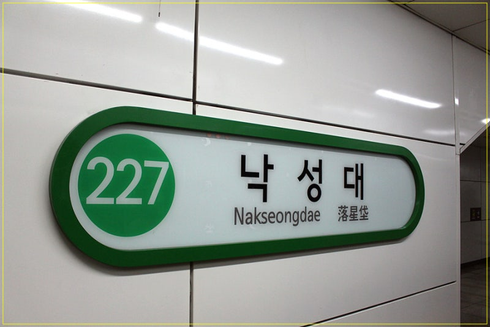

낙성대 근처 부동산 구인구직, 관악구 부동산 채용, 봉천동 공인중개사 구인으로 찾고 계신다면 이곳입니다. 프라임에셋부동산은 서울 관악구 솔밭로 1 봉천빌딩 1층, 2호선 낙성대역 5번 출구에서 도보 약 1분에서 동료를 모집합니다.
이 글은 채용 페이지에 공개된 내용만 정리했습니다. 급여 숫자를 공고에 고정하지 않는 이유, 누가 맞는지, 지원이 어떻게 끝나는지도 그 기준입니다.
어디서 일하나요 — 낙성대·봉천·관악구

관악구 봉천·낙성대는 서울대·병원·2호선 수요가 겹치는 임대 시장입니다. 학생·직장인·가족 상담이 함께 들어오고, 원룸·투룸·전세·월세 문의가 끊기지 않는 편이라 현장에서 상담과 계약을 익히기 좋습니다.
- 위치: 서울특별시 관악구 솔밭로 1 봉천빌딩 1층
- 교통: 지하철 2호선 낙성대역 5번 출구 도보 약 1분
- 사무실: 역세권 1층. 고객이 찾기 쉽고, 대형 프랜차이즈가 아닌 소수 정예입니다
출퇴근이 짧은 것도 이유지만, 이 동네에서 일하는 더 큰 이유는 문의가 꾸준해 노력이 상담·계약으로 이어지기 쉽다는 점입니다.
누구를 찾나요 — 공인중개사·중개보조원
두 직무 모두 받습니다. 아래는 업무 방향이고, 세부 조건은 면접에서 맞춥니다.
| 구분 | 공인중개사 | 중개보조원 |
|---|---|---|
| 자격 | 공인중개사 자격증 | 신입 환영. 미등록이면 등록 절차 안내 |
| 하는 일 | 임대차·매매 중개, 시세 안내, 현장 상담 | 고객 응대, 매물 정리, 서류 보조 |
| 근무 형태 | 파트타임 등 상호 협의 | 일반적으로 풀타임. 다른 상황은 문의 |
경력 연차보다 성실함, 성장 의지, 고객에게 진심으로 상담하는 태도를 봅니다. 낙성대역·봉천동에서 길게 일하고 싶은 분이 잘 맞습니다.
별도의 장기 전문 교육 과정을 이수해야 시작하는 구조는 아닙니다. 중개보조원 등록이 없으면 등록 절차를 안내하고, 업무 루틴은 현장에서 차근차근 익힙니다.
일하는 분위기 — 세 가지 약속
채용 페이지가 면접 전에 보여 주려는 방향은 세 가지입니다. 숫자는 그 다음, 대화로 맞춥니다.
- 확실한 대우: 기본급·인센티브·보상은 면접에서 숨기지 않고, 서로 납득할 조건으로 협의합니다
- 편안한 근무: 압박보다 소통과 배려. 질문하기 편한 사무실을 지향합니다
- 함께 성장: 대표·동료와 가까운 거리에서 매물·계약·응대를 익힙니다. 단기 매출보다 재방문·소개를 중시합니다
이력서가 완벽하지 않아도 됩니다. 면접은 「일단 와서 이야기하는」 자리에 가깝고, 서로 맞는지 확인하는 시간입니다.
지원 방법
- 카카오 문의 — 이름, 희망 직무, 간단한 경력. 카카오 채널로 한 줄이면 됩니다
- 전화·방문 일정 — 편한 시간으로 맞춥니다. 방문 상담은 매일 10:00~19:00, 카카오 접수는 24시간
- 면접·조건 협의 — 급여와 근무 형태를 그 자리에서 안내합니다
- 합류 — 조건이 맞으면 업무를 시작합니다
전화는 010-8392-1072입니다. 오시는 길과 직무 카드는 채용 페이지에 그대로 있습니다.
자주 묻는 질문
공고에 급여가 없는데 괜찮을까요?
직무·경력·근무 형태마다 달라서입니다. 면접에서 투명하게 협의합니다.
경험이 전혀 없어도 되나요?
중개보조원은 신입을 받습니다. 공인중개사는 자격증이 필요합니다.
면접 때 무엇을 준비하나요?
필수 서류보다, 왜 이 일을 하고 싶은지와 어떤 환경에서 일하고 싶은지를 편하게 말씀해 주시면 됩니다.
파트타임도 되나요?
공인중개사는 협의 가능합니다. 중개보조원은 보통 풀타임이고, 다른 사정은 문의 때 말씀해 주세요.
맺음말
관악구·낙성대에서 부동산 일을 시작하거나 옮기려는 분이라면, 먼저 사무실 위치와 시장을 보고 조건을 면접에서 확인하는 순서가 맞습니다. 프라임에셋부동산은 그 대화를 카카오 한 통으로 엽니다.